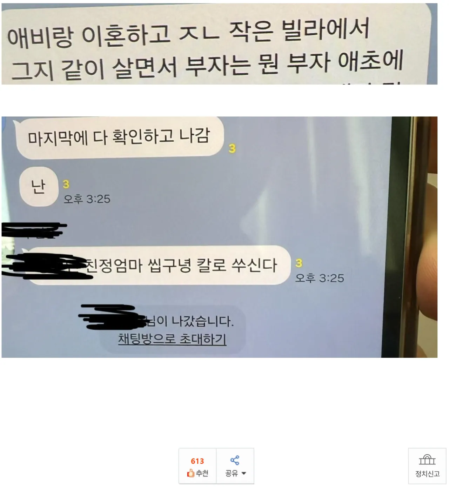
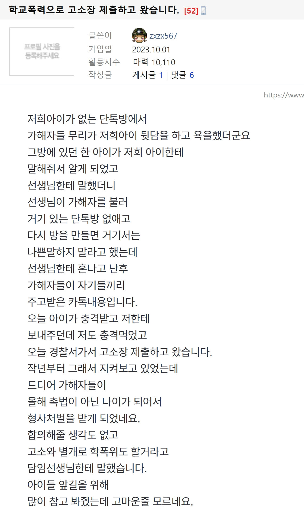

강력형사 사건은 네 말대로 앵간한 경우에는 소년보호심리로 10호 처분에 2년이 최대인거 맞는데, 범행수법이 악랄하고 전과도 이미 있고, 범죄 의도가 충분히 악랄한 경우엔 대법원도 형사처벌 송치 가능함. 물론 성인 범죄에 비해 그 기준이 훨씬더 유들유들해 터졌긴 하지만.
그런데 강간, 살인, 방화 같은거 말고 모욕죄는 성인이 저질러도 약식명령이나 벌금형으로 그치는 사건은 애초에 가정법원, 소년보호 심리 대상이 아니라서, 모욕죄 구성요건만 되면 대부분 기소유예나 약식명령으로 끝남.
진짜 모욕의 수준이 존나게 심하거나, 반성의 기미가 없거나 동종 전과가 많으면 정식 재판 가겠지만, 이걸론 소년보호심리 안열어줌.
갑자기 웬 대법원 얘기임
대법원에사 형사사건으로 송치한다고요?
소년보호사건을 갖고 대법원까지 간다굽쇼?
그 악성민원의 대가인 성찰자세 엄마도 그렇게까진 안 했는데?
그리고 난 '어차피 존나 세게 해도 이게 한계'라고 말한 겁미다
그게 기본값이라는 게 아니고
아 내가 이상하게 써놨네
대법원이 내놓은 청소년 범죄에 대한 형사 또는 가정법원 송치 기준이란 뜻이였음
친정엄마는 뭘뜻하는가? 늙크크는 오늘도 힘들다
엄.. 옳그떠랑 연관된거라.. 검색해보셈 그냥
저 정도 욕설은 해도 무방하다는 국민적 합의가 있긴 해 ㅋㅋ
이거 잊을 만하면 자꾸 올라오는데
애초에 이런 좆만이 사건은 촉법 유무랑 전혀 관계가 없음
여기서 좆만이 사건이란 검사나 판사가 합심하여 소년형사재판으로 가져가기 어려운 사건을 말함. 강간 방화 살인 퍽치기쯤은 돼야 한다는 거고 그조차도 에이 이건 좀 야간데 야개야개 이러면 바로 소년보호사건으로 송치됨(살인조차도)
소년보호사건에서는 소년이 만14세 이상인지 미만인지(즉 촉법여부)가 별로 중요하지 않음
즉 님들이나 저 엄마가 원하는 사이다 결말은 안 나옴
대학입시에 영향 크지 않냐고? 고등학교면 그럼
중학교면 그냥 소년원이나 징하게 갔다오고 끝나면 끝임
그나마도 좆마이나 그 에미애비가 대학 그딴 거에 좆고 관심도 없는 새끼면 아무 대미지도 없고
남는 건 저 새끼들 전학이나 심사원 갔다온 다음에 '저 새끼 카톡방으로 뒤땅까다가 빵 갔다온 새끼라며 ㅋㅋㅋㅋㅋㅋㅋ' 하고 실실 쪼개는 것만이 유일한 복수임
다시 말하지만 님들이 원하는 사이다는 없음